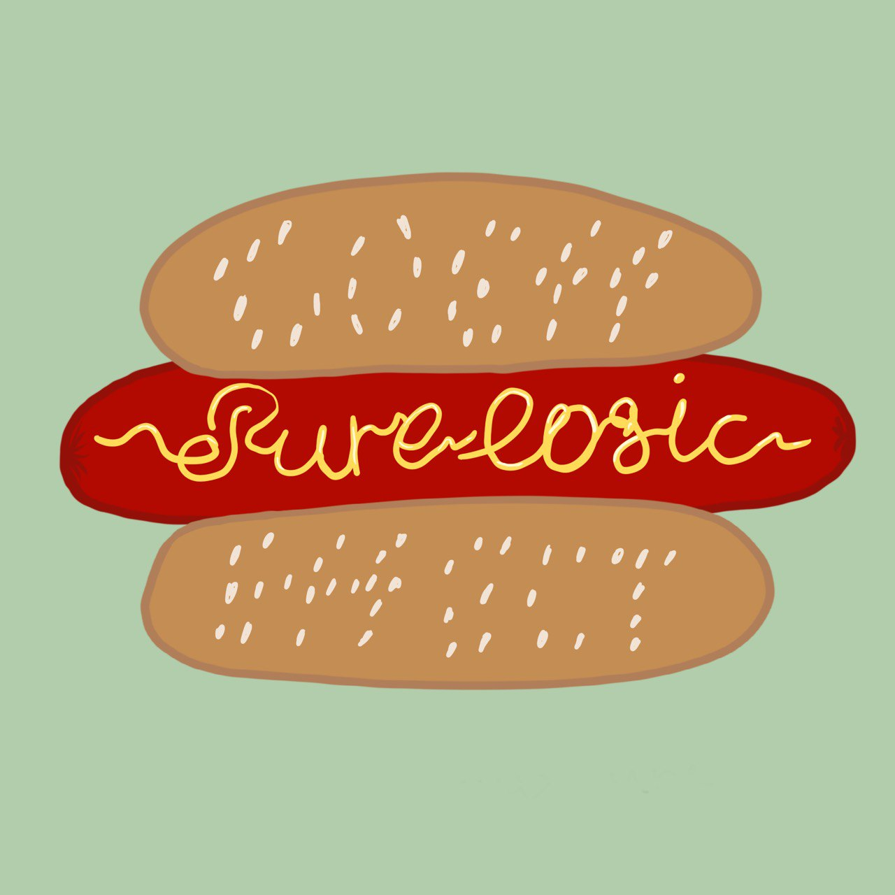

Коэффекты

Коэффекты - очень размытое понятие, используемое в разных контекстах немного по-разному. Но для построения чисто функционального приложения они являются очень важными. Попробую обьяснить, как я их понимаю сам.
Вспомним эффекты
Эффекты - это что-то, что является как бы выходным побочным действием нашей логики. То есть мы приняли решение что-то сделать и отдали это наружу. На, дескать, выполняй. А Коэффекты - то, что мы должны вычислить перед выполнением нашей логики. Какой-то контекст, входные параметры.
Пример, где эффектов недостаточно
В The Elm Architecture эффекты называются командами. И вот для того, чтобы получить текущее время, нужно вернуть команду “получи время” и дождаться сообщения с результатом. Очень непрактично, но в Elm по-другому никак, ведь это язык вообще без побочных эффектов, в нём всё делается через команды.
Workaround
Когда я пишу в TEA стиле под Android, я часто прибегаю к хаку: вставляю всякий контекст в сообщение. Побочные эффекты доступны отовсюду, поэтому дёрнуть текущее время во фрагменте не составляет труда. Да и фрагмент - это уже за границей нашего чистого мира, так что в этой помойке можно разводить любую грязюку.
Красивый способ
Если как-то можно было сделать коэффекты, то проблема бы решилась сама собой. Говоришь системе, что прежде чем на этот мессадж ответить, нужно чтобы она выполнила коэффект “достать текущее время”. И декларативненько выходит, и переиспользовать можно.
Стейт - это эффект?
Ещё одна штука, которая мне мозолит глаза в сигнатуре любого редьюсера - стейт. Ведь это всего лишь частный случай побочного эффекта (и коэффекта). Хотим что-то прочитать из стейта - это коэффект. Хотим что-то туда записать - это эффект. И если добиться приятных коэффектов, то можно решить множество проблем с этим стейтом связанных. Мы можем раскладывать стейт по разным местам. Можем положить его в базу, записать на диск, синхронизировать с бекендом. И всё это делать гранулярно, отельно для каждого кусочка. Но при этом всё ещё сохранять главные преимущества TEA над MVI: чистую логику и строгую очередность обработки входящих сообщений.